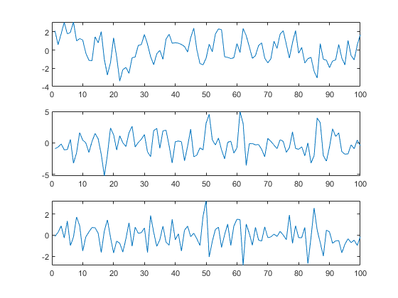
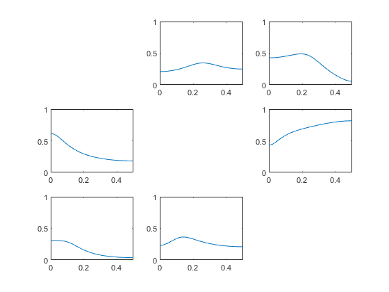
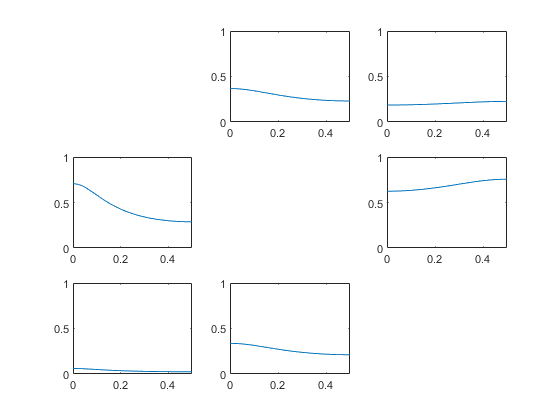

clear all
close all
freqs=[0:0.01:0.5];
fmin=min(freqs);
fmax=max(freqs);
ns=1;
ex=2;
switch ex,
case 2,
disp('Baccala Example 2');
d=3;
T=100;
sigma=1;
p=1;
A = [0.5 0.3 0.4;-0.5 0.3 1;0 -0.3 -0.2];
case 3,
disp('Baccala Example 3');
d=5; T=100; sigma=1; p=3;
r2=sqrt(2);
z3=zeros(1,3);
z4=zeros(1,4);
z5=zeros(1,5);
A1 = [0.95*r2 z4;z5;z5;z3 0.25*r2 0.25*r2;z3 -0.25*r2 0.25*r2];
A2 = [-0.9025 z4;0.5 z4;z5;-0.5,z4;z5];
A3 = [z5;z5;-0.4 z4;z5;z5];
A=[A1,A2,A3];
otherwise
disp('Unknown example number');
end
w=zeros(d,1);
C = diag(sigma*ones(d,1));
x = spm_mar_gen (w, A, C, T);
h=figure;
set(h,'name','Time series');
for i=1:d,
subplot(d,1,i);
plot(x(:,i));
end
mar=spm_mar(x,p);
mar=spm_mar_spectra (mar,freqs,ns,0);
h=figure;
set(h,'name','DTF: From Column to Row');
for k=1:d,
for j=1:d,
if ~(k==j)
index=(k-1)*d+j;
subplot(d,d,index);
dtf=mar.dtf(:,k,j);
plot(mar.f,dtf);
axis([fmin fmax 0 1])
end
end
end
h=figure;
set(h,'name','PDC: From Column to Row');
for k=1:d,
for j=1:d,
if ~(k==j)
index=(k-1)*d+j;
subplot(d,d,index);
pdc=mar.pdc(:,k,j);
plot(mar.f,pdc);
axis([fmin fmax 0 1]);
end
end
end
Baccala Example 2
  